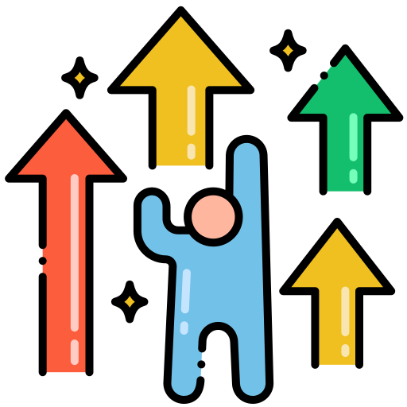

Our Journey
-
ทำเกรดAให้ได้มากที่สุดเท่าที่ทำได้
การมุ่งมั่นทำเกรด A ให้ได้มากที่สุดเท่าที่ทำได้ในมหาวิทยาลัยเป็นการสะท้อนถึงความตั้งใจและความพยายามในการเรียนรู้และพัฒนาตนเองอย่างต่อเนื่อง ความสำเร็จนี้ไม่เพียงแค่ช่วยให้มีผลการเรียนที่ดี แต่ยังเปิดโอกาสทางการศึกษาต่อและโอกาสทางอาชีพในอนาคตด้วย
-

เข้ากิจกรรมที่อยากทำ
การเข้าร่วมกิจกรรมที่สนใจในมหาวิทยาลัยไม่เพียงเสริมสร้างทักษะใหม่ๆ และสร้างความสัมพันธ์ที่ดีกับเพื่อนๆ แต่ยังเป็นวิธีที่ดีในการค้นพบความสนใจและความสามารถเฉพาะตัว การมีส่วนร่วมในกิจกรรมต่างๆ ยังสามารถช่วยให้พบเจอความสนุกในชีวิตนักศึกษาได้มากขึ้นด้วย
-

พัฒนาตัวเองนอกเวลาเรียน
การพัฒนาตัวเองนอกเวลาเรียนนั้นสำคัญอย่างยิ่ง เพื่อเสริมทักษะที่เกี่ยวข้องกับการเขียนโปรแกรม การวิจัยเทคโนโลยีใหม่ ๆ และการทำโปรเจกต์ที่ท้าทาย การเข้าร่วมกิจกรรมนอกหลักสูตรยังช่วยเพิ่มประสบการณ์จริงและสร้างเครือข่ายทางวิชาชีพที่มีค่า
-

หาประสบการณ์การทำงาน ตอนปิดเทอม
การหาประสบการณ์การทำงานตอนปิดเทอมในด้านการเขียนโค้ดจะช่วยให้สามารถปรับใช้ความรู้ทางทฤษฎีกับการแก้ปัญหาจริงในโปรเจกต์จริง เพิ่มทักษะการเขียนโค้ดและการทำงานร่วมกับทีมพัฒนาซอฟต์แวร์ นอกจากนี้ยังเปิดโอกาสในการสร้างผลงานและโปรไฟล์ที่น่าสนใจสำหรับอนาคต